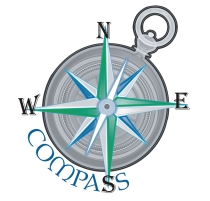

|
CoBro Consulting created the Comprehensive Program Assessment System (COMPASS) specifically to facilitate educational program data management, student tracking, statistical analysis, and progress reporting. COMPASS is a secure database management and evaluation tool that expedites data entry, organizes program participant data, generates reports, and conducts statistical analyses to evaluate program success. COMPASS is not a generic, one-size-fits-all system. Our technicians customize the COMPASS system to meet each client’s needs and to maximize the efficiency and evaluation capacity of each program. Beyond customization and implementation of COMPASS, CoBro Consulting offers additional system support services including onsite system user training, ongoing technical support, monthly online training, secure server data hosting and maintenance, and data analysis. COMPASS is hosted on CoBro Consulting's state-of-the-art, secure, SSL certificated servers, and includes monthly online training and unlimited technical support. |
 |
COMPASS includes the following key features and functions:
Accessibility - COMPASS is available in a web-based format to ensure access to practitioners from multiple settings and accessible through multiple web browsers and tablets (e.g., Internet Explorer, Safari, Firefox, Chrome, iPad.) The system provides separate accounts for each participating user and allows for varying levels of access. With all user access, data within COMPASS is accessible and available in real-time.
Data Entry Screens - COMPASS includes easy to navigate data entry screens that facilitate data entry of program services and activities information. These user-friendly screens include error messaging to prevent duplication of entries and ensure data accuracy. The screens also include drop-down menu options and batch entry features.
Database Integration - CoBro data specialists coordinate secure electronic transmission of student demographic and academic (such as course grades, GPA, and standardized test scores) data directly into the COMPASS system. Data from a variety of sources, formats, and structural designs can be integrated. Our technicians have substantial experience converting data into a consistent format while maintaining the validity of the original files. The system then integrates the program participation data with academic outcomes information for reporting and analysis.
Automated Reports - COMPASS provides user-defined, pre-formatted reports that are available on-demand to users. Reports are downloadable and allow the user to save, print, and send via email. In addition, users can export raw data into Excel format, on demand.
Statistical Analysis - COMPASS provides a series of advanced statistics options in a user-friendly drop-down menu format. Both descriptive statistics (e.g., means and frequencies) and inferential statistics (e.g., correlations, chi-squares, t-tests) are available. This enables users to examine the effects of individual program elements, determine overall program impact and strengthen evaluation capacity.
Security - CoBro Consulting currently maintains our systems on state-of-the-art, secure, SSL certificated servers. CoBro technicians strictly adhere to data maintenance procedures that include daily system backups and established data integrity processes. In addition, CoBro Consulting maintains security protocols to ensure all data is protected under the Family Educational Rights and Privacy Act (FERPA).
Many federal programs experience challenges in collecting, calculating, and reporting matching fund contributions from the wide variety of contributing grant partners. To address this challenge, CoBro Consulting designed the COMPASSMatch System to manage in-kind contributions (i.e., matching funds). COMPASSMatch is available online for easy access by multiple users across wide-area programs. Through the system, employees and program partners can enter and verify their own donated time. Matching funds are automatically computed based on stored salary and benefits information. This allows grant administrators to track real-time progress toward meeting contribution goals, and dramatically reduces time and effort on match documentation tasks. COMPASS is hosted on CoBro Consulting's state-of-the-art, secure, SSL certificated servers, and includes monthly online training and unlimited technical support. |
COMPASSMatch includes the following key features and functions: